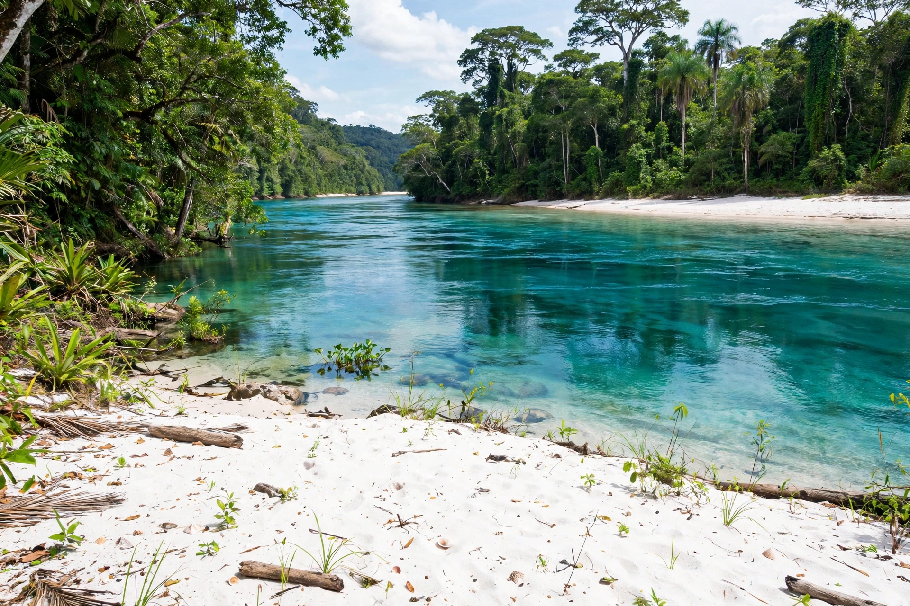

| Tapajós River | |
 | |
| Country | Brazil |
|---|---|
| Length | about 1,930 km (with headwaters) |
| Source | Confluence of the Juruena and Teles Pires rivers |
| Mouth | Amazon River at Santarém |
| Basin size | about 492,000 km² |
The Tapajós (Portuguese: Rio Tapajós) is one of the largest tributaries of the Amazon River, flowing north through the Brazilian states of Mato Grosso, Amazonas and Pará to join the Amazon at Santarém. It is a clearwater river, famous for its blue-green transparency and white-sand beaches.
The Tapajós proper begins at the confluence of the Juruena and Teles Pires (São Manuel) rivers. It flows northeast past Itaituba and the rapids of São Luiz do Tapajós, then widens into a broad, lake-like lower course — up to 12 km wide — before meeting the Amazon. Its mouth forms the celebrated "meeting of the waters" at Santarém, where the two rivers' differently coloured waters flow side by side.
The river takes its name from the Tapajó people, a large Indigenous society encountered by Europeans in the 17th century near present-day Santarém. The Munduruku are the principal Indigenous people of the middle Tapajós today. The basin contains the Tapajós National Forest and several Indigenous territories.
The Tapajós basin is one of the Amazon's most biodiverse, with many endemic fish species. It has been at the centre of controversy over proposed hydroelectric dams, notably the São Luiz do Tapajós project, whose environmental licensing was cancelled by Brazil's environmental agency in 2016, and over illegal gold mining (garimpo), which has polluted stretches of the river with sediment and mercury.